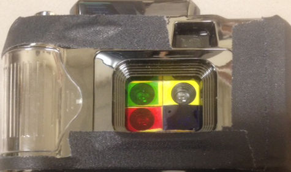
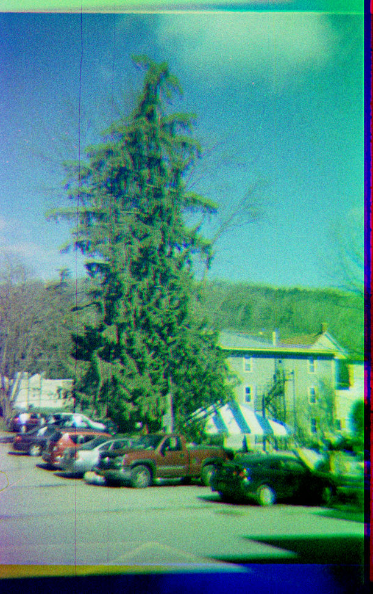
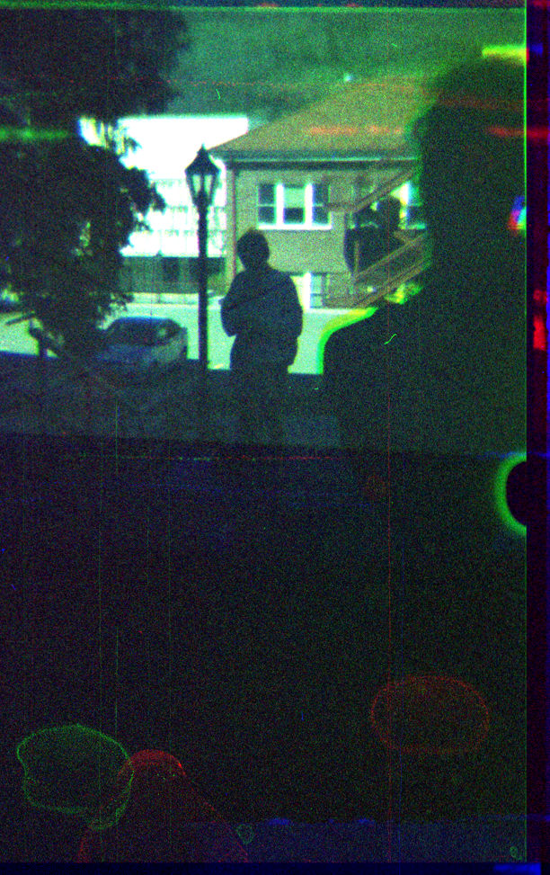
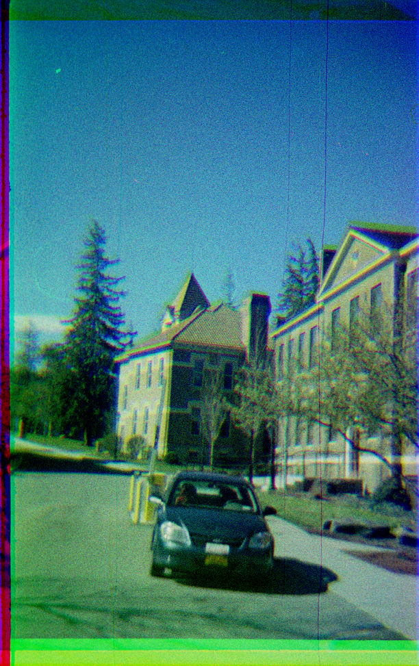

- Music/Sound:
- Duophonic guitar pickup
- VSTs for you
- Ringdown, VST
- Ed Myrol, VST
- Pianofax, VST
- PMer, VST
- Impulse Control, VST
- Music software for you
- Bedtime, resonators
- Keytrails, pitched delay line
- Parody, PD analog mockery
- Music devices at home
- Toy piano magnetic pickup
- Piano damper tricks
- Harmonizers
- Four string tunings
- Film Tech Archive:
- Motion film hand lab
- Infrared Viewer
- Vertical film drying rack
- Test strip printer
- Film tech small victories
- LED projector
- 16MM Framewise Transfer
- Photochemical
- Action camera color
- Blue reversal
- Carl:
- Show must've went on
- Contact
- Go home now
Action Camera Color
There exist inexpensive 35mm still cameras that take 4 quarters of a frame sequentially. Using color filters and school glue, it’s possible to make a basic color separation camera.
It’s great for landscape,
portraiture,
and even car photos.
To top
Blue Reversal
Here’s my favorite processing trick for motion film. The strip is only partially reversed with a weak or short bleach. The remaining negative density in the strip can then be toned blue with iron toner. The creamy color of the undeveloped stock is stable enough. I’ve had clippings on my desk for a couple years that haven’t gone dark. The film in this video was hand processed roughly in a bucket. The effect targets the highlights more elegantly when I process on the 50’ spiral.